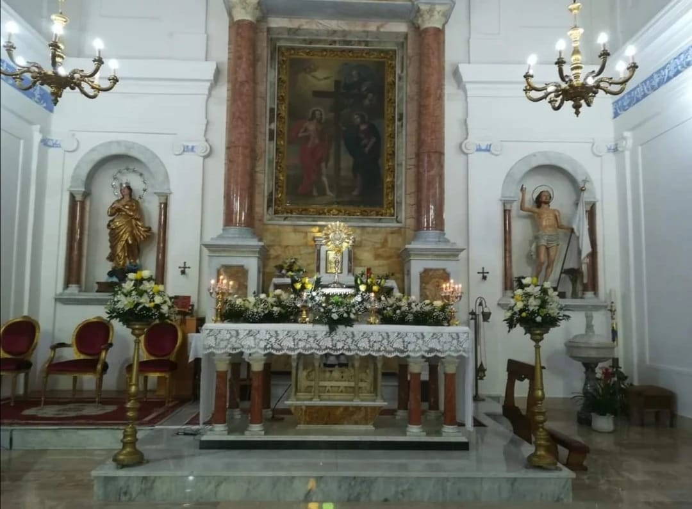
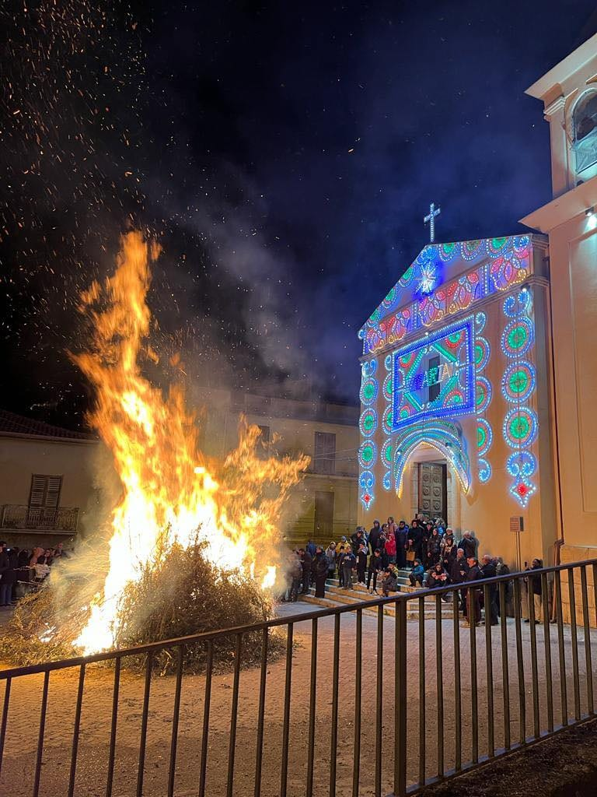
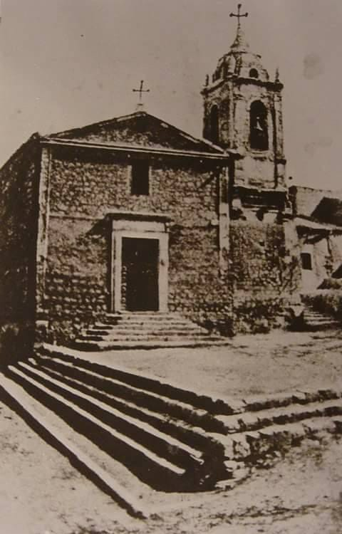
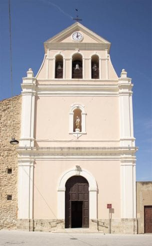
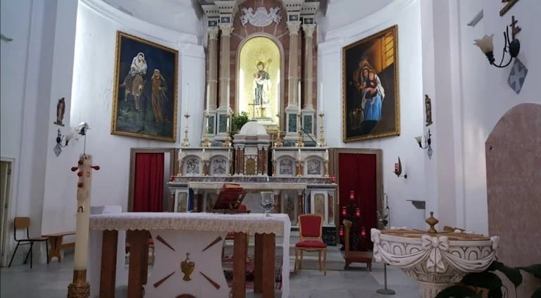
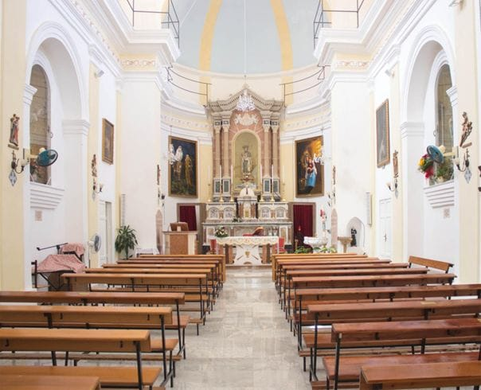
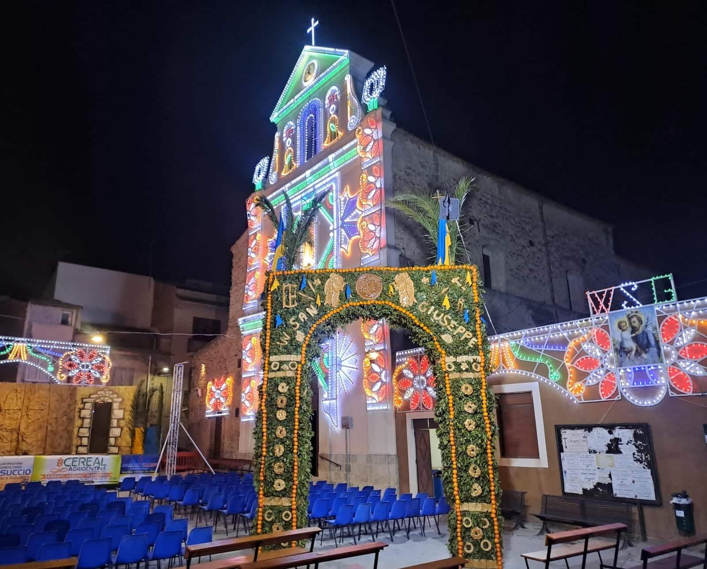

Due edifici sacri che raccontano secoli di storia di Campobello di Licata: la più antica chiesa del paese e il tempio del Santo Patriarca.
Two sacred buildings telling centuries of the history of Campobello di Licata: the oldest church in town and the temple of the Holy Patriarch.
La chiesa di Gesù e Maria è la chiesa più antica di Campobello di Licata, risalente alla seconda metà del XVII secolo.
The church of Gesù e Maria is the oldest church in Campobello di Licata, dating back to the second half of the 17th century.

La sua costruzione fu avviata nella seconda metà del Seicento per opera di un gruppo di coloni. Nacque originariamente come cappella del feudo, precedendo la fondazione ufficiale del paese, avvenuta nel 1681 per mano del duca di Montalbo Raimondo Ramondetta. Inizialmente la struttura fungeva anche da punto di riferimento e accoglienza per gli operai locali.
Its construction began in the second half of the 17th century by a group of settlers. It was originally born as the feudal chapel, preceding the official foundation of the town in 1681 by the Duke of Montalbo, Raimondo Ramondetta. Initially the building also served as a point of reference and welcome for local workers.
Architettura. L'edificio sorge nel centro storico con una pianta rettangolare ad aula unica. La copertura presenta capriate in legno a vista, mentre l'abside quadrata ospita un altare maggiore in marmi mischi.
Architecture. The building stands in the historic centre with a rectangular single-nave plan. The roof features exposed wooden trusses, while the square apse houses a main altar in mixed marbles (marmi mischi).
Il patrimonio artistico. Sull'altare maggiore in marmo splende la tela di Gesù e Maria, attribuita a Domenico Provenzani; la chiesa custodisce inoltre affreschi di pregio e un maestoso crocifisso ligneo di forte impatto emotivo. Nonostante la sua semplicità, resta un luogo di straordinaria pace e raccoglimento, capace di invitare chiunque alla preghiera.
Artistic heritage. On the marble main altar shines the painting of Gesù e Maria, attributed to Domenico Provenzani; the church also preserves fine frescoes and a majestic wooden crucifix of great emotional impact. Despite its simplicity, it remains a place of extraordinary peace and recollection, inviting everyone to prayer.



Viene edificato il campanile originario, influenzato dallo stile dei maestri trapanesi.
The original bell tower is built, influenced by the style of the Trapani masters.
Il campanile viene interamente ricostruito.
The bell tower is entirely rebuilt.
Un restauro generale comporta la rimozione degli altari lignei dorati e del soffitto dipinto a olio, che raffigurava l'Istituzione dell'Eucarestia.
A general restoration leads to the removal of the gilded wooden altars and of the oil-painted ceiling depicting the Institution of the Eucharist.
Dopo circa tre anni di chiusura, la chiesa viene riaperta al culto il 9 giugno con una solenne inaugurazione presieduta dall'arcivescovo di Agrigento, mons. Francesco Montenegro.
After about three years of closure, the church is reopened for worship on 9 June with a solemn inauguration led by the Archbishop of Agrigento, Mons. Francesco Montenegro.




Dedicata al Santo Patriarca, si erge maestosa sulla piazza antistante con la sua elegante facciata.
Dedicated to the Holy Patriarch, it rises majestically over the square in front with its elegant façade.
La chiesa di San Giuseppe venne costruita inizialmente fuori dal centro abitato intorno al 1865, sull'impianto dell'antica chiesetta del 1800, precedentemente distrutta a causa di un incendio durante il periodo dell'epidemia.
The church of San Giuseppe was initially built outside the inhabited centre around 1865, on the foundations of the ancient little church of the 1800s, previously destroyed by a fire during the epidemic period.
Attualmente si presenta a pianta rettangolare, ad una sola navata centrale con abside terminale. La volta a botte finestrata presenta sei finestre che illuminano l'aula e un largo cornicione in gesso, sotto le finestre, corre per tutto il perimetro terminando su due colonne lavorate artisticamente. Due pilastri a sezione rettangolare dividono l'aula dal presbiterio.
Today it has a rectangular plan, with a single central nave and a terminal apse. The windowed barrel vault has six windows that illuminate the hall, and a wide plaster cornice runs beneath the windows around the whole perimeter, ending on two artistically carved columns. Two rectangular pillars divide the hall from the presbytery.
L'abside semicircolare contiene l'altare maggiore; sopra l'altare, all'interno di una nicchia, si trova la statua di San Giuseppe. Sui muri laterali vi sono quattro nicchie e, in fondo alla chiesa, è posta la cantoria sostenuta da due colonne. La facciata, semplice ed elegante, è inquadrata da due lesene maggiori, caratterizzata da un portale in legno arcuato e sormontata da un trittico di campane. Ad un livello inferiore si trova una cripta che risale al nucleo originario della chiesa.
The semicircular apse contains the main altar; above the altar, within a niche, stands the statue of Saint Joseph. On the side walls there are four niches and, at the back of the church, a cantoria (choir loft) supported by two columns. The simple and elegant façade is framed by two major pilasters, features an arched wooden portal and is crowned by a triple bell-gable. On a lower level there is a crypt dating back to the original core of the church.
Accessibilità. La chiesa è accessibile alle persone con disabilità grazie a una rampa all'ingresso secondario.
Accessibility. The church is accessible to people with disabilities thanks to a ramp at the secondary entrance.
Trova gli indirizzi, le mappe e tutti i contatti delle due chiese.
Find addresses, maps and all contacts of the two churches.
Contatti e mappeContact & maps